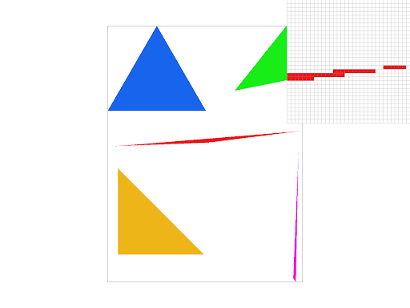
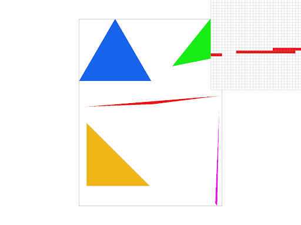
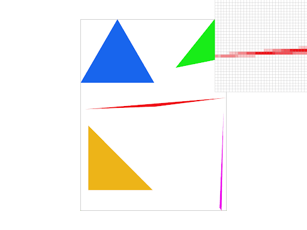
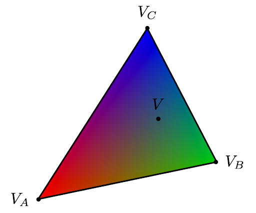
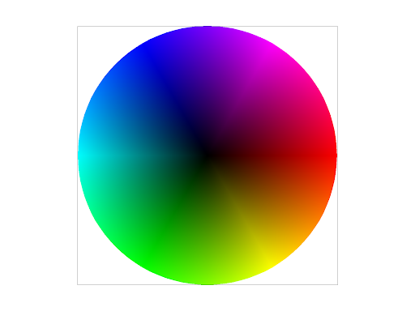
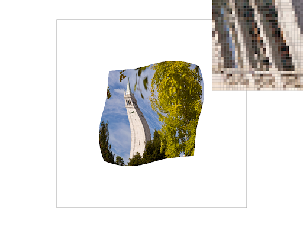

TODO: Give a high-level overview of what you implemented in this homework. Think about what you've built as a whole. Share your thoughts on what interesting things you've learned from completing the homework.
Task 1: Drawing Single-Color Triangles
Triangles in screen space can have continuous values, but our display has discrete pixels, so rasterizing triangles is a problem that is quite lengthy. And so here is a general process of how you rasterize a triangle when only sampling every pixel at a time:
We take a bounding box formed by the triangle based on the minimum and maximum x and y coordinates for the vertices (where the bounding box has integer coordinates, as we take the floor value for minimums and ceiling value for maximums just to ensure we fully enclose the triangle). Then, we loop over every possible discrete pixel value contained within this grid, as the triangle can only exist inside this box.
To check if the triangle is inside for every single pixel, we take the center of the pixel. If its coordinate is (x, y), we simply perform the check for (x + 0.5, y + 0.5). Then, to check if the triangle is actually inside this particular point, we take the 2d cross product of the edges with respect to this point in counterclockwise order. If it has the same sign for all three edges, then the point is inside the triangle. This works since a point inside a triangle is always on the same side of all three edges when tested with the cross product. And because the points are given to us in counterclockwise order, we can assume that we want this final product to be positive. Finally,if we find that the point is inside the triangle, we write the corresponding color of the triangle to the sample buffer.
Now for the above part, note that this inside test only works if the points are given to us in a counterclockwise order. To determine this, we take the cross product of two consecutive edges, and see if the z-axis component is positive. If it’s not, then we simply swap the order of any two vertices given to us, and now we are guaranteed to have points given to us in a counterclockwise order!
Now that we have gone through all possible pixels, once the sample buffer values are written to the framebuffer, we’ll successfully see the triangle.
Done!
Our algorithm, as described from above, checks to see if each possible pixel inside the bounding box lies inside the triangle, which helps ensure that no unnecessary checks outside the bounding box are performed. Thus our algorithm is no worse than any algorithm that checks every sample within the bounding box.

Here, the pixel inspector is centered on the right edge of the red triangle, where we see some aliasing!
Task 2: Antialiasing by Supersampling
Supersampling, the process of taking multiple samples per pixel, is useful because it creates smoother lines, reduces jaggies, and allows for reduction of rendering artifacts. To implement supersampling, we began by dynamically resizing the sample buffer to width * height * sample_rate so that it could handle sampling at sample_rate locations per pixel. Then, instead of directly calling fill_pixel from the rasterize_triangle method, we first populated the supersample buffer with the appropriate color for sample_rate samples per pixel (sqrt(sample_rate) per row, sqrt(sample_rate) per column), where the samples are equally distributed within the pixel. Finally, in the resolve_to_framebuffer function, we averaged all the samples within a pixel to get an average color, then called fill_pixel, which we modified to fill all subsamples in that original output pixel with the average color in sample_buffer. In summary, we used supersampling to antialias the triangles by sampling at subpixels and then downsampling.

sample rate = 1
sample rate = 4

sample rate = 16
As the supersampling rate increases, the edges of the triangle become smoother, reducing jaggies. This is because each output pixel takes into account how much of the pixel is actually in the triangle by sampling more than just 1 subpixel in each output pixel and then averaging. Thus, the edges, which are only partially inside the triangle, have a more gradient-like appearance, which smoothes them out. The more samples taken per output pixel, the more accurate the average value will be.
Task 3: Transforms
We decided to make the cubeman lift both his arms, so we used both translations and rotations to move his arm pieces. To do the rotations and translations, we used the rotation and translation matrices that we had implemented.
First, we rotated the whole left arm 30 degrees clockwise, and then rotated his lower left arm an additional 15 degrees (because we wanted additional movement in this lower left arm part!) Second, to keep the arm coherent with the rest of the body, we translated the whole arm a little to the left and down (about 10 units to the left and 5 downwards). Finally, we had to translate the lower arm a little to the left as well by 5 units, else the arms would intersect, and we wouldn’t see the space for the joints.
Then, we applied the exact same transformations to the right arm, but reversed with respect to the horizontal axis. We negated the numbers we used as input for rotations and horizontal translations. Thus the rotations were counterclockwise, and translations were to the right (but still downwards).
Here, Cubeman is lifting his arms symmetrically!
Task 4: Barycentric coordinates
Barycentric coordinates are a way of expressing a point's position relative to the vertices of a triangle. More specifically, a point is expressed as the weighted sum of the vertices of a triangle, as shown in the equation \(V = αV_A + βV_B + γV_C\), where \(α + β + γ = 1\). The closer a point is to \(V_A\), the higher the the value of \(α\) will be (same for \(V_B\) & \(β\), \(V_C\) & \(γ\)). For example, in the triangle shown below, which has one red (\(V_A\)), one green (\(V_B\)), and one blue (\(V_C\)) vertex, the rest of the points can be interpolated from these colors. For example, if a point V is close to \(V_A\) but far from \(V_B\) and \(V_C\), the value of \(α\) will be large while the values of \(β\) and \(γ\) will be small. Thus, V will be mostly red with very light hints of green and blue. Similarly, a point that is equidistant from all 3 vertices would have an equal amount of red, green, and blue. This calculation can be applied to every point in the triangle, and with barycentric interpolation, the colors in this triangle can be smoothly blended, as shown in the picture.

colored triangle using barycentric interpolation

color wheel using barycentric interpolation
Task 5: "Pixel sampling" for texture mapping
Pixel sampling is the process of choosing our pixel colors based on mapping from another source, and using the preexisting colors from corresponding points from that image, or a subset of them.
In rasterize_textured_triangle, we perform the steps of rasterizing a typical triangle and checking if sample points fall inside each line, but we also have the additional step for each pixel, to calculate its barycentric coordinate, and then using this value to interpolate its UV texture coordinate. In other words, we map the sample point’s coordinate in screen space to texture space. Once in texture space, we can get the color values of the corresponding texels. The details on how we get the final color value vary based on sampling methods, but ultimately we get one color value for our sample point. Then, we write this color value to the sample buffer for that pixel, perform any additional supersampling adjustments, and are done texture mapping after performing this for all possible pixels!
Nearest vs Bilinear Sampling:
Nearest sampling and bilinear sampling differ on which texels we choose to take color values from.
In nearest sampling, we find the nearest texel based on the UV coordinate we are given by simpling scaling it by the dimensions of the texture, and then rounding it to the nearest integer! Then, we use that texel’s color directly.
In bilinear sampling, we do something similar to nearest, but this time we take the nearest 4 points to the UV coordinate. And since the UV coordinate is closer to some texels than others, we weight the final color value based on proportional distance. First, we take 2 linear interpolations for each set of two texels in the horizontal directions (the top two and the bottom two), which gives us two color values. We then take one more linear interpolation of these values based on their vertical proportionate distance to the uv coordinate point and are left with one color value. This final color value is what we choose to use.
Because more points are used and they are weighted, we tend to see more smooth results for bilinear sampling, though it can be more computationally expensive than nearest sampling.
Nearest; 1 sample per pixel

Bilinear; 1 sample per pixel
Nearest; 16 samples per pixel
Bilinear; 16 samples per pixel
As seen from above, bilinear sampling in one pixel beats out nearest sampling. We chose a high contrast part of the image to compare, so here it’s the Campanile windows. Notice that the bilinear sampling method produces an image that is more smooth. Specific parts of the image where this occurs is near the guardrails of the Campanile windows (the three horizontal lines near the bottom of each window). In the bilinear sample, they are much more defined, as in it’s more obvious which pixel corresponds to a guardrail, and we can see that they each look similar to another. In nearest sampling, these guardrails aren’t as well defined, and differ from each other, even though they are built the same. There are straggling pixels and we can’t tell exactly where the guardrail location is. In general, the nearest sampling method looks more pixelated, especially near window edges.
Now, when we take 16 samples per pixel notice that the quality in both images is much more smooth, continuous, and blurred, which is to be expected from supersampling. However we can still see slight differences between the bilinear and nearest sampling. For example, under the guardrails, the colors are more “uniform” and similar to each other in the bilinear sampled image. But this is really a slight difference and overall at this point, the two images look very similar to one another.
In general, bilinear sampling tends to lead to more smooth and continuous images. This is because bilinear sampling takes into account more texels and more information. Thus in areas where there are large contrasts, we tend to see a bigger disparity between bilinear and nearest sampling; In bilinear, the contrasts will appear to be more smoothed out, versus much more noticeable and even pixelated in nearest sampling. However supersampling with more samples per pixel will yield more continuous and smooth results with either sampling method.
Task 6: "Level Sampling" with mipmaps for texture mapping
Level sampling is a technique that samples textures at different mipmap levels depending on the level of detail in order to reduce aliasing and blurring. For example, a texture that is more close up or has a higher level of detail would use a lower mipmap level, whereas a texture that is further away or lower resolution would use a higher mipmap level.
To implement level sampling for texture mapping, we first began by calculating uv barycentric coordinates in rasterize_textured_triangle by finding alpha, beta, and gamma values (same process as in rasterize_interpolated_color_triangle) for (x, y), (x + 1, y), and (x, y + 1) for every sample. We created a SampleParams struct sp and populated it with the attributes psm, lsm, p_uv (barycentric coordinates for (x, y)), p_dx_uv (barycentric coordinates for (x +1, y)), and p_dy_uv (barycentric coordinates for (x, y + 1)). Then, we passed sp into the Texture::sample function, which samples accordingly based on the different combinations of level and pixel sampling methods. For nonzero levels, this function calls a helper method get_level, which calculates the difference vectors dx = sp.p_dx_uv - sp.p_uv and dy = sp.p_dy_uv - sp.p_uv to find the appropriate level, which is equivalent to max(width * dx.norm(), height * dy.norm()). In addition, for linear level sampling methods, we sampled both the floor and ceiling of the level and computed a weighted sum of the two.
For pixel sampling, the nearest neighbor method was faster and also used up less memory than the bilinear sampling method because it only takes into account one texel, whereas bilinear sampling samples from more texels and thus has more information to base off of. However, the tradeoff here is the antialiasing power, as the the nearest neighbor method yields edges that aren’t very smooth, and the artifacts are more blocky and rigid.
For level sampling, L_ZERO is the fastest because it doesn’t utilize mipmapping, but the tradeoff is that it uses the most memory and also is the most ineffective at antialiasing. On the other hand, L_LINEAR is the slowest because it requires sampling from multiple levels but has the highest antialiasing power, and the texture transitions are the smoothest. It uses less memory than L_ZERO because it isn’t always fetching from the highest resolution texture. L_NEAREST is more of a middle ground, as it’s slower than L_ZERO but faster than L_LINEAR, and it reduces aliasing more than L_ZERO but less than L_LINEAR. Because it only samples from one mipmap level, the memory usage is slightly lower than that of L_LINEAR.
For the number of samples per pixel, using only one sample per pixel is very quick and uses less memory, but this results in jaggies and has very little antialiasing power. On the other hand, supersampling, where we use multiple samples per pixel, is slower and uses up more memory but is much more effective at antialiasing and smoothing out edges.